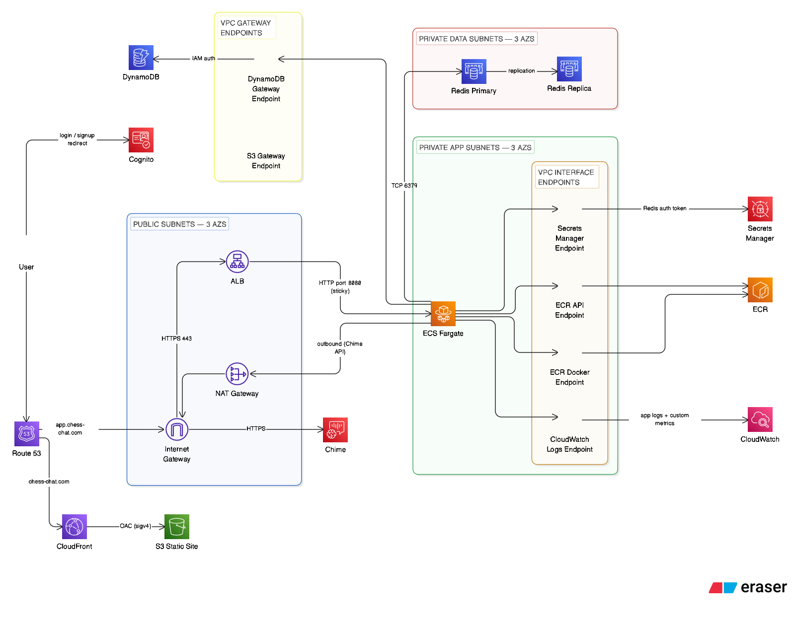
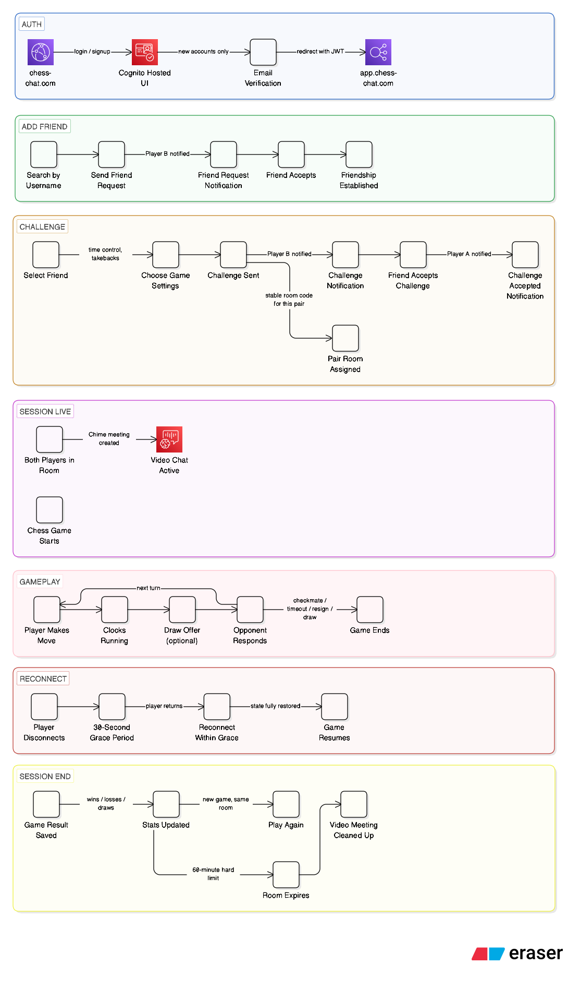

Flagship Project · AWS Solutions Architect
Real-time video chess platform. Two players, one room code, live video — built on production-grade AWS infrastructure.
This is a functional demo of the core product — video chat and chess gameplay working together in the browser. It's not an infrastructure walkthrough; the AWS architecture is covered in the sections below and in the technical deep-dive.
The app is currently live but I'll be taking it down soon to save on running costs. It may come back in a later phase with the planned WebRTC migration and remaining social features completed.

ChessChat lets two players compete at chess over live video using a shared room code. There are no matchmaking queues or strangers — users invite people they already know, and by design they have to bring an opponent.
The gameplay model follows phone-call session semantics: both players enter a video room that persists for the session, playing as many sequential chess games as they want within it. Video chat never interrupts between games. When both players leave, the room tears down immediately — no stale state, no forgotten sessions accumulating infrastructure costs.

The platform uses a split-host architecture — the static marketing and
auth surface (chess-chat.com) runs on CloudFront + S3, while the gameplay
runtime (app.chess-chat.com) runs on ECS Fargate behind an ALB. These are
deliberately separate delivery mechanisms with different scaling, caching, and security
profiles, kept intentionally apart.
chess-chat.com app.chess-chat.com
(CloudFront + S3) (ALB → ECS Fargate)
Static landing / auth Authenticated gameplay runtime
│ │
└──────── Cognito ─────────────┘
│
┌──────────────┼──────────────┐
│ │ │
ElastiCache DynamoDB Chime SDK
Redis (Users, (Video)
(Room/game Games,
state) Social)
The underlying network is a three-tier VPC across three Availability
Zones in us-east-1. Public subnets host the ALB and NAT Gateway. Private
app subnets host Fargate tasks with no public IPs. Private data subnets host Redis
with zero internet access. Security groups enforce one-directional trust at every layer:
internet → ALB → Fargate → Redis.
Each of these was a deliberate tradeoff. Full rationale is captured in the ADRs in the repo.
ADR-0002 · Split-Host Architecture
Separating the static auth surface from the app runtime produces a cleaner security boundary, independent deployment pipelines, and a stronger architecture narrative. CloudFront handles the public surface; the ALB never sees unauthenticated traffic. The two hosts use different AWS delivery mechanisms by design, not convenience.
ADR-0001 · Single NAT Gateway
The VPC has three AZs and private subnets in each, but egress routes through one
NAT Gateway — saving ~$32/month at the cost of a single-AZ egress dependency.
The Terraform VPC module accepts a nat_gateway_mode variable so
switching to per-AZ NAT is a one-variable change, not a network redesign.
ADR-0004 · Phone-Call Room Lifecycle
Rooms exist only during live participation. A short 12-second reconnect grace handles accidental disconnects without triggering full teardown. No rematch or room reuse — players start a new room. This eliminates stale-state risk and makes video infrastructure cost predictable.
Data Layer · Redis + DynamoDB Split
Active room and game state lives in Redis with TTL expiry. DynamoDB receives exactly one write per completed game. Write costs scale with games completed, not moves played. Redis stays small regardless of total match history volume.
Video · Chime SDK → WebRTC Migration Plan
Chime SDK provided a fast path to working video. The planned migration to native browser WebRTC + self-hosted Coturn eliminates per-minute billing in favour of flat EC2 cost. All sessions are 1-on-1 so an SFU is never needed; only ~15% require TURN relay, keeping Coturn costs predictable at any reasonable scale.
The build followed infrastructure-first order — each layer unblocking the next.
1 · VPC & Networking
Three-tier VPC across three AZs — public, private app, and private data subnets. Route tables, security groups, NAT gateway, VPC endpoints for ECR, CloudWatch, Secrets Manager, and DynamoDB.
2 · Data Layer
DynamoDB tables for users, games, and the social graph. ElastiCache Redis cluster with multi-AZ replication and Secrets Manager auth token. Schema designed upfront to avoid migration pain later.
3 · Auth
Cognito user pool with email/password and Google OAuth. Hosted UI for the login surface on the static site. JWT tokens used for both REST and WebSocket authentication.
4 · Compute & Delivery
ECS Fargate service behind an ALB with HTTPS. CloudFront + S3 for the static marketing and auth site. Route 53 for DNS, ACM for certificates on both distributions.
5 · CI/CD
GitHub Actions pipeline with OIDC authentication to AWS — no stored access keys. Separate pipelines for the static site and the ECS service. ECR image tagged by commit SHA, ECS rolling deploy on push to main.
6 · Chess Engine
WebSocket server handling room creation, game state, and real-time move broadcast. Client-side validation with chess.js for UX speed; server-side validation with Stockfish as the authority. Chess clocks and sound cues built into the game loop.
7 · Video
Chime SDK integration for managed WebRTC. The server creates a meeting on room activation and issues attendee tokens to both players. Video runs independently of the chess session — a disconnect from one does not affect the other.
8 · Social Layer
Friends, challenges, and notifications. In progress — the DynamoDB schema and backend endpoints are built; the frontend integration is partially complete.